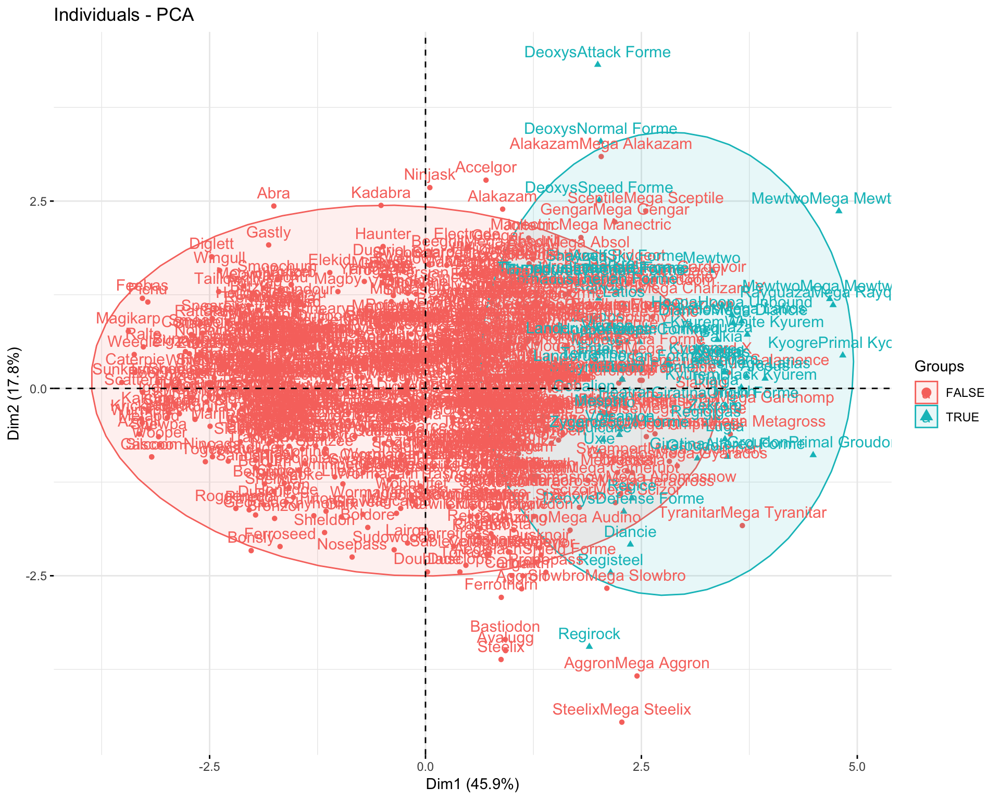
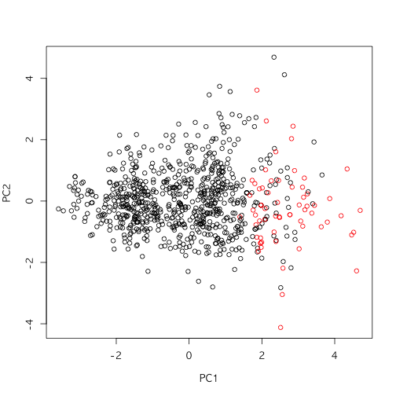
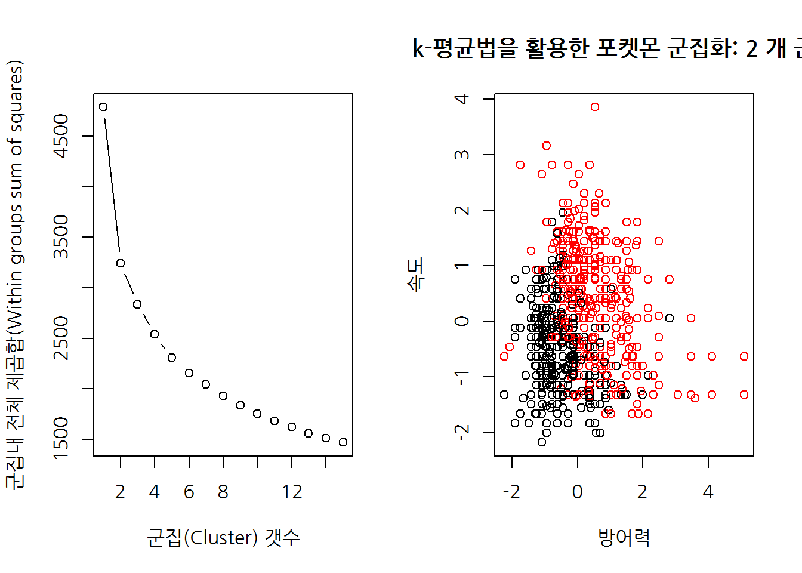

xwMOOC 기계학습
비지도 학습 - 포켓몬
학습목표
- 초딩에게 인기가 많은 포켓몬 캐릭터를 군집으로 묶어낸다.
- 주성분 분석을 통해 전처리하고 나서 계층적 군집화 및 k-평균 군집화 통계분석을 수행한다.
- 계층적 군집화와 평균 군집화 결과를 비교한다.
1. 포켓몬 데이터 1
캐글 포켓몬 데이터가 공개되어 721종류 포켓몬에 대한 데이터와 포켓몬 유형에 대한 정보가 담겨있다.
각 포켓몬에 대한 데이터 원본은 http://pokemondb.net/pokedex에서 확인한다.
1.1 포켓몬 데이터 불러오기
포켓몬 데이터를 캐글에서 다운로드 받아 불러온다. “Shuckle” 포켓몬은 이상점에 해당되니 대상에서 제거하고, 주성분분석과 군집분석을 위해 필요한 칼럼만 뽑아낸다.
# 0. 환경설정 --------------------------------------------
#library(tidyverse)
#1. 포켓몬 데이터 ---------------------------------------
pkmon_dat <- read_csv("data/Pokemon.csv") %>% dplyr::filter(Name != "Shuckle")Parsed with column specification:
cols(
`#` = col_integer(),
Name = col_character(),
`Type 1` = col_character(),
`Type 2` = col_character(),
Total = col_integer(),
HP = col_integer(),
Attack = col_integer(),
Defense = col_integer(),
`Sp. Atk` = col_integer(),
`Sp. Def` = col_integer(),
Speed = col_integer(),
Generation = col_integer(),
Legendary = col_character()
)
pkmon_dat <- column_to_rownames(pkmon_dat, 'Name')
pkmon_df <- pkmon_dat %>%
dplyr::select(attack = Attack, defense = Defense, sp_attack = `Sp. Atk`, sp_defense =`Sp. Def`, speed = Speed)
pkmon_legend <- ifelse(pkmon_dat$Legendary =="True", TRUE, FALSE)1.2. 데이터 전처리
군집분석 및 주성분분석을 위해 가장 먼저 척도조정이 필수적이다. 척도조정이 이루어지지 않는 경우 특정변수에 왜곡이 발생할 우려가 있다.
이런 왜곡을 잡아내는데 scale 함수를 활용한다. colMeans, apply 함수에 sd 값을 통해 척도조정이 잘 이루어졌는지 확인한다.
# 2. 데이터 전처리 ---------------------------------------
## 2.1. 척도 조정 ----------------------------------------
# 척도조정되지 않은 원본
colMeans(pkmon_df) attack defense sp_attack sp_defense speed
79.08761 73.64706 72.89862 71.70463 68.35670
apply(pkmon_df, 2, sd) attack defense sp_attack sp_defense speed
32.38560 30.70885 32.66709 27.27743 28.99216
# 척도조정
pkmon_scaled_df <- scale(pkmon_df)
# 척도조정한 원본
colMeans(pkmon_scaled_df) attack defense sp_attack sp_defense speed
-1.218345e-16 1.919790e-16 8.738968e-17 1.835615e-16 3.235400e-17
apply(pkmon_scaled_df, 2, sd) attack defense sp_attack sp_defense speed
1 1 1 1 1
1.3. 차원축소 주성분 분석
군집분석을 위해 활용될 수 있는 변수가 많은 경우 차원을 축소할 필요가 있다. 이런 목적으로 prcomp 주성분 분석을 수행한다. 물론 scale=TRUE, center=TRUE 인자를 넣어 척도를 조정한다.
주성분을 몇개까지 선택할 것인지에 대해서 설명되는 분산량을 누적한 누적 설명되는 분산량을 기준으로 80%, 90% 등 선정을 한다.
## 2.2. PCA 주성분분석 ----------------------------------------
pkmon_pca <- prcomp(pkmon_df, scale=TRUE, center=TRUE)
pca_var <- pkmon_pca$sdev^2
pca_exp_var <- pca_var / sum(pca_var)
showtext.begin()
par(family = "NanumGothic")
par(mfrow=c(1,2))
plot(pca_exp_var, xlab = "주성분(Principal Component)",
ylab = "설명되는 분산량(Proportion of Variance Explained)",
ylim = c(0, 1), type = "b")
plot(cumsum(pca_exp_var), xlab = "주성분(Principal Component)",
ylab = "누적 설명되는 분산량",
ylim = c(0, 1), type = "b")showtext.end()1.4. 차원축소 주성분 분석 시각화
biplot 함수를 통해 주성분분석 결과를 통해 변수들간에 연관성이 큰 변수를 이해하고 관측점들 관계도 동시에 시각화한다.
par(mfrow=c(1,1))
biplot(pkmon_pca)
## 2.3. PCA 주성분분석 ----------------------------------------
plot(pkmon_pca$x[, c(1, 2)], col = (pkmon_legend + 1),
xlab = "PC1", ylab = "PC2")
plot(pkmon_pca$x[, c(1, 3)], col = (pkmon_legend + 1),
xlab = "PC1", ylab = "PC3")2. 비지도 학습 - 계층적 군집(Hierachical Clustering)
비지도 학습의 대표적인 알고리즘이 계층적 군집(Hierachical Clustering) 알고리즘과 k-평균(k-means) 알고리즘이다. 계층적 군집(Hierachical Clustering) 알고리즘은 dist() 함수로 변수간 거리를 미리 계산하고 나서 hclust 함수에 넣어 수목도(dendrogram)을 통해 적절한 군집갯수를 확정한다.
높이를 기준으로 7.5를 자를 경우 군집을 3개까지 확보가 가능하다. 물론 cutree 함수를 통해 군집 갯수를 지정해 놓으면 자동으로 특정 갯수(예를 들어, 5개)만큼 선정한다.
계층적 군집법은 다양한 연결방법(linkage)을 제시하고 있어 상황에 맞춰 적절한 연결방식을 선택한다. centroid는 역전 현상이 나타나 권장되고 있지 않다.
# 3. 비지도 학습 : 계층적 군집(Hierachical Clustering) -----------------------------------------
pkmon_dist <- dist(pkmon_scaled_df)
pkmon_hclust <- hclust(pkmon_dist)
plot(pkmon_hclust)
abline(h=7.5, col="red")# 높이를 기준으로 군집화
#cutree(pkmon_hclust, h = 220)
# 군집갯수를 기준으로 군집화
#cutree(pkmon_hclust, k = 5)
## 3.1. 다양한 계층적 군집 연결방법 -----------------------------------------------------
pkmon_hclust_complete <- hclust(pkmon_dist, method = "complete")
pkmon_hclust_average <- hclust(pkmon_dist, method = "average")
pkmon_hclust_single <- hclust(pkmon_dist, method = "single")
pkmon_hclust_cut <- cutree(pkmon_hclust_complete, k = 3)
table(pkmon_hclust_cut)pkmon_hclust_cut
1 2 3
305 359 135
3. 비지도 학습 - k-평균(k-means)
비지도 학습 k-평균법은 전체 군내 제곱합(total within cluster sum of squares)를 최소화하는 방식이 선택되는데 이를 위해서 x축에는 군집갯수, y축에는 전체 군내 제곱합(WSS)를 쭉 시각화해서 팔꿈치처럼 전체 군내 제곱합이 변곡점을 지나 감소하는 지점을 최적 군집갯수로 선정한다.
# 3. 비지도 학습 : k-평균(k-means) -----------------------------------------
## 3.1. 비지도 학습 k-평균 알고리즘 시각화 --------------------------------
par(mfrow = c(2, 3))
for(i in 1:6) {
pkmon_km_out <- kmeans(pkmon_scaled_df, 3, nstart=1, iter.max = 50)
plot(pkmon_scaled_df, col = pkmon_km_out$cluster,
main = paste0("Total Within SS: ", round(pkmon_km_out$tot.withinss, 0)),
xlab = "", ylab = "")
}
## 3.2. k-평균 군집갯수 선정 --------------------------------
# 포켓몬 데이터 군집내 전체 제곱합 초기화: 0
pkmon_wss <- 0
# 군집을 1개부터 15개까지 증가
for (i in 1:15) {
pkmon_km_out <- kmeans(pkmon_scaled_df, i, nstart=20, iter.max = 50)
pkmon_wss[i] <- pkmon_km_out$tot.withinss
}
par(mfrow=c(1,2))
showtext.begin()
par(family = "NanumGothic")
# 군집내 전체 제곱합과 군집갯수 시각화
plot(1:15, pkmon_wss, type = "b",
xlab = "군집(Cluster) 갯수",
ylab = "군집내 전체 제곱합(Within groups sum of squares)")
## 3.3. k-평균 군집화 --------------------------------
k <- 2
pkmon_km_out <- kmeans(pkmon_scaled_df, centers = k, nstart = 20, iter.max = 50)
# 방어와 속도 기준으로 군집 시각화
plot(pkmon_scaled_df[, c("defense", "speed")],
col = pkmon_km_out$cluster,
main = paste("k-평균법을 활용한 포켓몬 군집화:", k, "개 군집"),
xlab = "방어력", ylab = "속도")showtext.end()4. 군집분석 성능 비교
주성분분석을 위해 차원축소를 한 후에 계층적 군집분석과 k-평균 군집분석을 수행하고 이를 table 함수를 통해 성능을 비교한다.
# 4. 군집분석 성능비교 ------------------------------
pkmon_pca_df <- pkmon_pca$x[,c(1:4)]
pkmon_pca_dist <- dist(pkmon_pca_df)
# 계층적 군집분석 vs. K-평균 군집
pkmon_hclust <- hclust(pkmon_pca_dist, method = "complete")
pkmon_km <- kmeans(pkmon_pca_df, 3, nstart=20, iter.max = 50)
# 3개 군집으로 분류
pkmon_hclust_clusters <- cutree(pkmon_hclust, k=3)
# 군집비교
table(pkmon_km$cluster, pkmon_hclust_clusters) pkmon_hclust_clusters
1 2 3
1 57 181 0
2 353 0 0
3 104 34 70